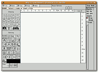

xfig
Dieser Artikel wurde für die folgenden Ubuntu-Versionen getestet:
Ubuntu 16.04 Xenial Xerus
Ubuntu 14.04 Trusty Tahr
Zum Verständnis dieses Artikels sind folgende Seiten hilfreich:
Xfig  ist vielseitiges Vektorzeichenprogramm, das vor allem für wissenschaftliche Grafiken geeignet ist. Aussehen und Bedienung sind recht ungewöhnlich, geht nach kurzer Einarbeitungsphase jedoch leicht von der Hand. Eine modernere und mächtigere Alternative ist Inkscape, das ebenfalls Vektorgrafiken erstellt. Eine Alternative für Diagramme und Flussgrafiken ist Dia.
ist vielseitiges Vektorzeichenprogramm, das vor allem für wissenschaftliche Grafiken geeignet ist. Aussehen und Bedienung sind recht ungewöhnlich, geht nach kurzer Einarbeitungsphase jedoch leicht von der Hand. Eine modernere und mächtigere Alternative ist Inkscape, das ebenfalls Vektorgrafiken erstellt. Eine Alternative für Diagramme und Flussgrafiken ist Dia.
Xfig speichert Bilder im eigenen .fig-Format, kann aber in zahlreiche andere Formate exportieren. Diese Aufgabe erledigt hinter den Kulissen das zugehörige Programm transfig, das auch selbständig (zum Beispiel in Skripten) aufgerufen werden kann.
Installation¶
 Aus den Ubuntuquellen könnten folgende Pakete installiert werden [1]:
xfig (universe)
transfig (universe, optional, für den Export in fremde Formate)
xfig-libs (universe, optional, Wer vorgefertigte Symbole in seinen Bildern verwenden möchte, sollte dieses Paket installieren)
 mit apturl
mit apturl
Paketliste zum Kopieren:
sudo apt-get install xfig transfig xfig-libs
sudo aptitude install xfig transfig xfig-libs
Der Eintrag im GNOME-Menü lautet dann "Anwendungen -> Grafik -> Xfig". Alternativ kann das Programm mit dem Befehl
xfig
gestartet werden [2].
Bedienung¶
Auf der linken Seite befindet sich die Werkzeugauswahl, eingeteilt in Werkzeuge zum Erstellen neuer Objekte (oben) und Werkzeuge zum Bearbeiten von Objekten (unten). Üblicherweise bricht ein Rechtsklick die aktuelle Aktion ab. Ist man sich einmal unsicher, welche Maustaste man im Moment klicken muss, sollte man einen Blick an den oberen Rand des Fensters werfen, wo die Auswirkungen der einzelnen Klicks bezeichnet sind.
Sehr praktisch zur Bearbeitung von Dateien ist das Raster, welches über die Schaltfläche am linken unteren Rand ("Grid Mode") eingeschaltet werden kann.
Xfig ist standardmäßig so eingestellt, dass neue Ankerpunkte für neue Objekte nur an einem 1mm-Raster angelegt werden können. Dieses Verhalten ist sehr praktisch, da Objekte so einfach automatisch auszurichten sind. Auch dies lässt sich über eine Schaltfläche am unteren Rand ("Point Position") einstellen.
Grafiken können über "File -> Save" gespeichert und über "File -> Export" exportiert werden.
Hinweis:
Xfig hat eine ungewöhnliche Eingabeerkennung: Um in ein Textfeld zu schreiben, muss sich der Mauszeiger über dem betreffenden Textfeld befinden.
Eigene Symbole wiederverwenden¶
Hat man das Paket xfig-libs installiert, kann man über das "Library"-Werkzeug vorgefertigte Grafiken einbinden. Um selber Symbole zu der Sammlung hinzuzufügen, speichert man diese ganz normal ab und kopiert sie (als root) in einen beliebigen Ordner in /usr/share/xfig/Libraries.
Problem und Lösung¶
Beschriftungen skalieren nicht¶
Sollte beim Zoomen die Beschriftung nicht mit skalieren, sondern stattdessen unverändert in der Größe bleiben, dann müssen zwei zusätzliche Pakete mit Schriften installiert werden:
gsfonts
gsfonts-x11 (ab Xenial in universe)
mit apturl
Paketliste zum Kopieren:
sudo apt-get install gsfonts gsfonts-x11
sudo aptitude install gsfonts gsfonts-x11
Damit sollte das Problem behoben sein.
- Erstellt mit Inyoka
-
 2004 – 2017 ubuntuusers.de • Einige Rechte vorbehalten
2004 – 2017 ubuntuusers.de • Einige Rechte vorbehalten
Lizenz • Kontakt • Datenschutz • Impressum • Serverstatus -
Serverhousing gespendet von